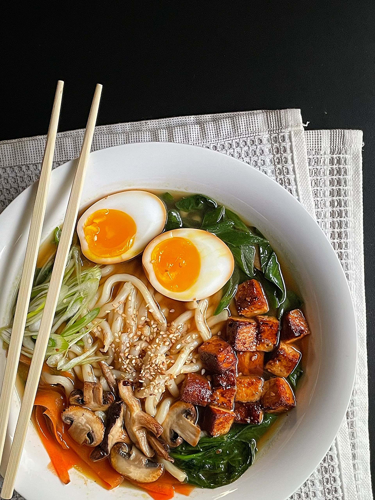

Vegetarisches Ramen

Lust auf Ramen?
Dieses vegetarische Ramen-Rezept ist eine köstliche und nahrhafte Option, die mit frischen Zutaten und einer aromatischen Brühe zubereitet wird. Ideal für ein schnelles Abendessen oder als wärmende Mahlzeit an kalten Tagen.
Zutaten
Für die Brühe:
- 1 Blatt Kombu (Braunalge)
- 4 Knoblauchzehen, grob gehackt
- 1 Zwiebel, grob gehackt
- 3 cm Ingwer, geschält und grob gehackt
- 2 EL Sesamöl
- 4 EL Miso-Paste (hell)
- 100 ml Mirin (süßer Reiswein)
- 150 ml Sojasauce
- 600 ml Sojadrink (der Gemüsebrühe)
Für die Einlage:
- 200 g Pak Choi, gewaschen und in Stücke geschnitten
- 150 g Shiitake-Pilze, geputzt und in Scheiben geschniten
- 100 g Mungobohnensprosen
- 3 Frühlingszwiebeln, in Röllchn geschnitten
- 300 g Räuchertofu, gewürfelt
- 400 g Ramen-Nudeln
Zubereitung
- Brühe vorbereiten: Kombu mit 800 ml Wasser in eine Schüssel geben und mindestens 30 Minuten einweichen lassen. In einem großen Topf das Sesamöl erhitzen und Knoblauch, Zwiebel und Ingwer für ca. 2 Minuten anrösten.
- Miso und Sojasauce hinzufügen: Miso-Paste, Mirin und Sojasauce unterrühren. Den eingeweichten Kombu abtropfen lassen und zusammen mit dem Wasser zur Mischung im Topf geben. Alles zum Kochen bringen und dann bei niedriger Hitze ca. 20 Minuten köcheln lassen.
- Gemüse vorbereiten: Während die Brühe köchelt, Pak Choi, Shiitake-Pilze und Mungobohnensprossen vorbereiten. Tofu in einer separaten Pfanne anbraten, bis er goldbraun ist
- Nudeln kochen: Die Ramen-Nudeln nach Packungsanleitung in einem separaten Topf kochen. Abgießen und beiseite stellen
- Zusammenstellen: Die Brühe durch ein Sieb in einen anderen Topf gießen, um die festen Bestandteile zu entfernen. Die Brhe erneut erhitzen und Pak Choi sowie Shiitake-Pilze für ca. 5 Minuten darin garen.
- Servieren: Ramen-Nudeln gleichmäßig auf Schalen verteilen, die heiße Brühe mit dem Gemüse darüber gießen. Mit Mungobohnensprossen, gebratenem Tofu und Frühlingszwiebeln garnieren.
Guten Appetit!